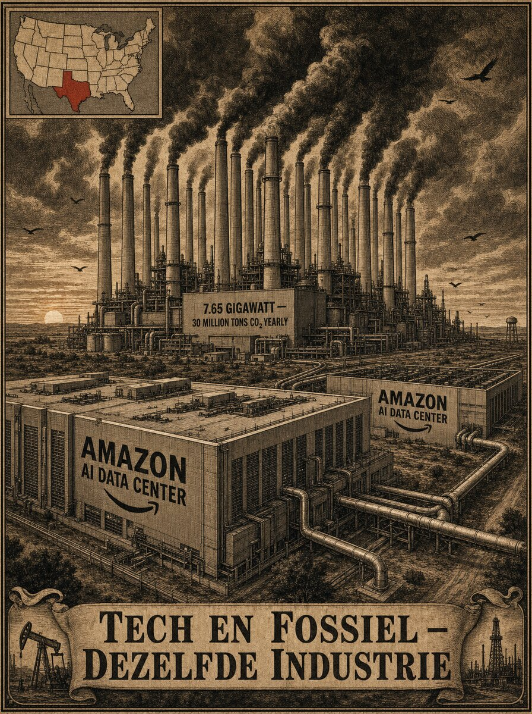
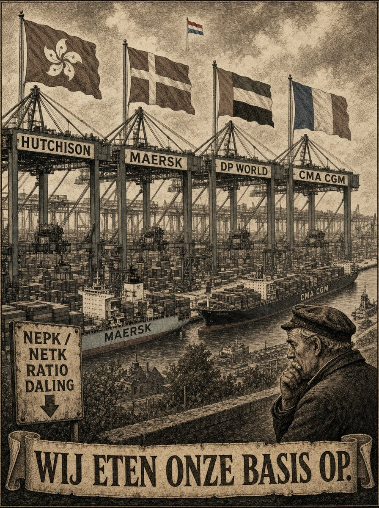
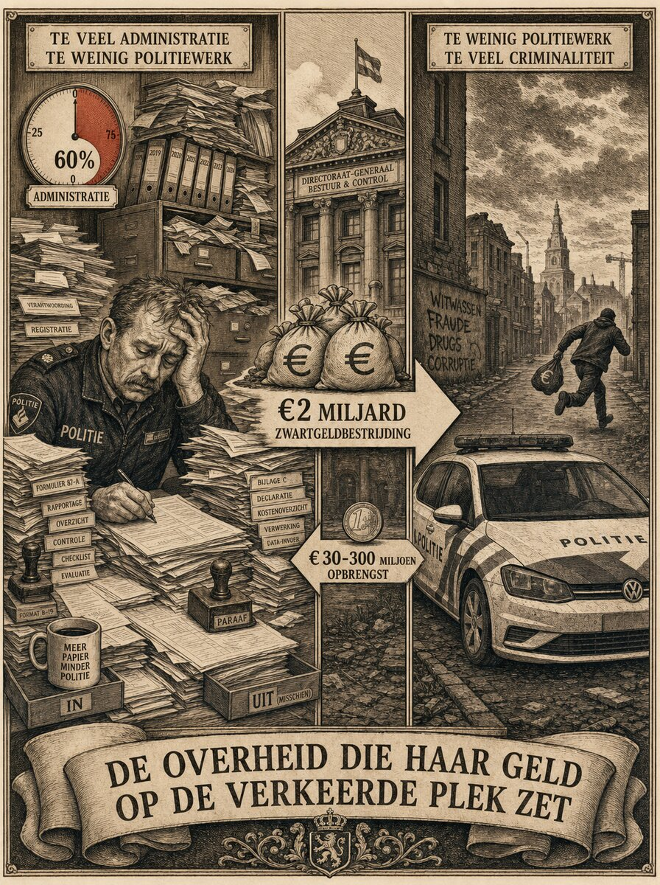
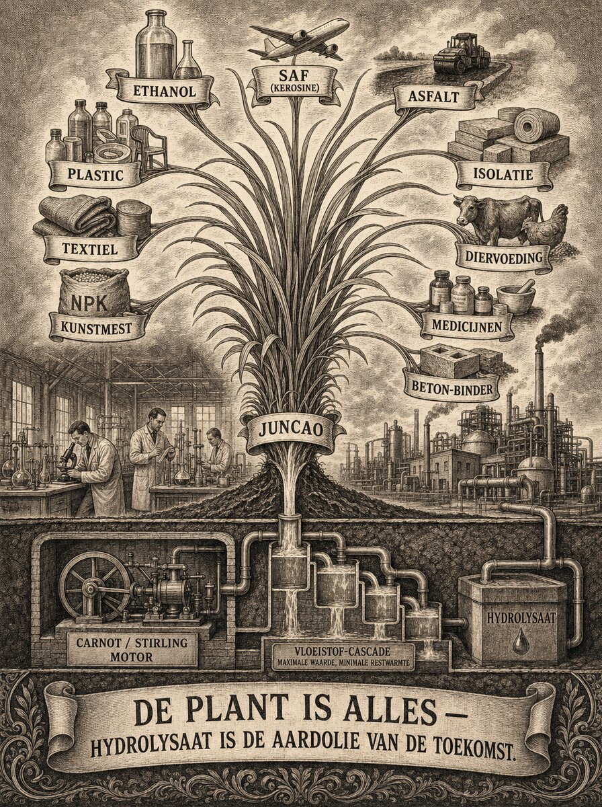
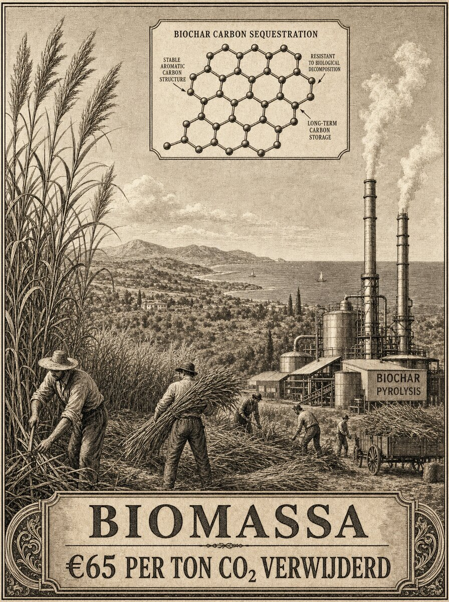

Europa Slavenland
Zeven signalen in één week wijzen op hetzelfde: onze energie komt uit Arabië, onze materialen uit China, onze tech uit Amerika. Als wij niet ingrijpen worden wij binnen tien jaar cliënt van drie machtsblokken tegelijk. Er is precies één uitweg — en die zit in de plant.
Hydrolysaat is de aardolie van de toekomst.
Door Jacobus van Merksteijn

Europa in de kettingen van drie machtsblokken — en de biomassa die de kettingen doorbreekt.
De zeven signalen
De NRC publiceerde vorige week een eerlijk stuk over de klimaatschuldencrisis (Mark Beunderman). Volgens de denktank Bruegel dreigt een “climate sovereign doom loop”: klimaatschade → lagere bbp-groei → lagere overheidsinkomsten → minder ruimte voor adaptatie → nóg meer schade. Beunderman noemt de loop “helaas niet helemaal ondenkbaar”.
Op LinkedIn dezelfde week: Philippe Curchod deelde een Allianz-simulatie van €800 miljard economische schade tot 2030 door herhaalde hittegolven. Frankrijk alleen goed voor €211 miljard. Duitsland, Italië en Spanje volgen.
Paul van Hek schreef over de rekening die na Prinsjesdag richting de werkende Nederlander gaat: extra miljarden voor defensie, zorg en infrastructuur, betaald door mensen die werken. Van Hek noemt de constatering. Wij zullen laten zien waar de constatering vandaan komt.
Abdelkarim Bellafkih, directeur Flanders Hydraulics, waarschuwde over water. “Wachten tot het water ons dwingt om keuzes te maken, is wellicht de duurste optie.”
Remco de Boer (energie-onderzoeker) noteerde dat de Europese economie ondergeschikt wordt gemaakt aan klimaatdoelen — en dat dat om samenhang vraagt tussen klimaat, industrie, innovatie en geopolitiek. Hans van Cleef vulde aan: “beleid wordt pas effectief wanneer het uitvoerbaar en voorspelbaar is.”
Vijf signalen. Vijf professionals uit vijf vakgebieden. En dan zijn er signaal zes en zeven, die precies tegenover elkaar staan.
De Europese Commissie legde deze week het grootste CO2-verwijderingsprogramma ter wereld op tafel: 250 miljoen ton permanente CO2-opslag tussen 2031 en 2040, met de Commissie zelf als centrale koper. Politiek in aantocht, budgetlijnen klaar.
Amazon kreeg diezelfde week vergunning voor de grootste gascentrale ooit gebouwd — 7,65 gigawatt in Texas, 30 miljoen ton CO2 per jaar, alleen voor AI-datacenters (signalering: Joeri Casteleyn). Microsoft heeft een 20-jarig gascontract met Chevron voor 2 GW in datzelfde Texas. Verwachting: 77 gigawatt aan Amerikaanse datacenters in 2030, vrijwel allemaal fossiel opgewekt.
Doe de rekensom. De EU wil in tien jaar 250 miljoen ton verwijderen. Amazon's ene centrale stoot in datzelfde decennium circa 300 miljoen ton uit. Tech en fossiel zijn dezelfde industrie geworden, en zij bijstoken sneller dan de EU-CDR-veiling weghaalt.

Amazon's Texas-complex: één centrale stoot in tien jaar méér CO2 uit dan de hele EU-CDR-veiling weghaalt. Tech en fossiel zijn dezelfde industrie geworden.
Onder de zeven signalen: de soevereiniteitscrisis
Onze energie komt uit Arabische landen. Onze materialen — lithium, kobalt, zeldzame aarden, silicium voor zonnepanelen, magneten voor windturbines — komen uit China. Onze AI-infrastructuur en chips komen uit Amerika. Elke zonnepark bouwen versterkt de Chinese leverancier. Elk AI-datacenter binnenhalen versterkt de tech-fossiel-as in Texas.
Dit is geen klimaatcrisis. Dit is een soevereiniteitscrisis met een klimaatgezicht.
Als wij op deze weg doorgaan zijn wij binnen tien tot vijftien jaar functioneel afhankelijk van drie externe machtsblokken tegelijk. Dat is geen economie meer. Dat is een cliënttoestand — een slavenland, zonder ijzers maar wel geketend.
Wij eten onze basis op: de NEPK-daling
Er is een laag onder de klimaatsignalen die meetbaar is. Wij noemen die binnen Het Open Vizier NEPK ten opzichte van NETK: Nederlandse Eigen Productieve Kapitaalgoederen versus de totale in Nederland aanwezige productieve capaciteit. Die ratio daalt al decennialang, en de trend versnelt.

Rotterdam onder buitenlandse eigenaren: Hutchison, Maersk, DP World, CMA CGM. NEPK/NETK daalt structureel. Wij eten onze basis op.
Kijk waar wij staan:
- Rotterdamse container-overslag: ECT Delta is Hutchison (Hongkong), APM Terminals is Maersk (Denemarken), RWG is DP World (VAE) plus Hutchison plus Maersk. Amsterdam CTU is CMA CGM (Frankrijk).
- Afvalverbranding: AEB Amsterdam grotendeels commercieel; ARN Nijmegen deels buitenlands.
- Energie: Nuon werd Vattenfall (Zweeds). Essent werd RWE (Duits). Eneco werd Mitsubishi/Chubu (Japan).
- Chemie: DSM werd DSM-Firmenich (Zwitsers). AkzoNobel Specialty werd Nouryon (Amerikaans). Fokker werd Melrose (Brits).
- Voeding: Vivera werd JBS (Braziliaans). Wessanen werd PAI Partners (Frans).
Wij zijn niet uniek. Duitsland loopt vóór: E.ON deels via BlackRock (Amerikaans), Uniper is alleen nog Duits omdat de staat het heeft moeten kopen om het niet te laten omvallen.
De basis waar wij van leven, wordt in stukjes verkocht. Elk stukje afzonderlijk lijkt handelbaar. Bij elkaar opgeteld is het een geleidelijke verandering van soevereine natie naar productielocatie. Als de NEPK-ratio te ver zakt, is er geen weg terug: dan kunnen wij onze eigen economische keuzes niet meer maken, want de eigenaren zitten elders.
Waarom “de rekening bij de rijken” precies verkeerd is
Als het klimaat- en defensiedebat een linkse wending neemt, komt onvermijdelijk de reflex: leg de rekening bij de rijken. Belast vermogen zwaarder. Erfenissen aanpakken. Vermogens afromen. Dit klinkt eerlijk. Maar het versnelt precies de NEPK-daling die wij hierboven meten.
Rijken maken armen niet armer. Zij maken armen rijker — door bedrijven te bezitten die mensen werk geven, kapitaal te riskeren dat banken niet lenen, pensioenfondsen te vullen die anderen laten leven, en de innovatie te financieren die iedereen daarna gebruikt. Armen worden niet arm door rijken; armen worden arm door niet te presteren.
En wat gebeurt er als wij die rijken wegjagen? Zij vertrekken. Hun bedrijven vertrekken met hen — of erger: worden gekocht door Amerikaanse pensioenfondsen, Chinese staatsfondsen, Emiraatse soevereine fondsen. Precies de mechaniek die NEPK/NETK omlaag heeft gebracht. Dat is geen theorie. Dat gebeurt al.
Dus: de rekening gaat niet naar werk (treft de mens die presteert). Niet naar vermogen (jaagt de eigenaren weg). Zij gaat naar de plek waar het wel kan: onrendabele overheid.
De rekening waar zij wél vandaan komt
Kijk naar wat er feitelijk gebeurt. Een werkende bij DHL, 40 uur, ontvangt netto tussen de €2300 en €2600 per maand. Dat is de mens die de rekening gaat betalen. Voor een afgekeurde die feitelijk wel kan werken en zich ziek houdt geeft de staat netto ongeveer €5000 per maand uit — en die persoon mag daarnaast zwart bijwerken.
Neem de rijbewijskeuring voor 70-plussers, elke vijf jaar. Kosten: circa 300 miljoen euro per jaar. Rendement: twaalf verkeersongelukken minder per jaar. Diezelfde 300 miljoen bij de politie zou honderden ongelukken helpen voorkomen. Wij kiezen voor twaalf.
Neem zwartgeldbestrijding. De Belastingdienst en FIOD besteden er circa 2 miljard euro per jaar aan. Opbrengst: tussen de 30 en 300 miljoen. Omdat het niet lukt wordt er weer een miljard bovenop gedaan. Zonder rendement. Diezelfde 2 tot 3 miljard bij een goed uitgeruste politie zou een veelvoud opleveren — plus preventie van misdaad, plus reactietijd op geweldsdelicten.

De onrendabele overheid: 60% van politietijd gaat naar administratie. €2 miljard voor zwartgeldbestrijding brengt hooguit €300 miljoen op. Diezelfde middelen bij de politie zouden een veelvoud aan misdaad en zwartgeld voorkomen.
En de politie zelf, die dit alles moet signaleren, besteedt zestig procent van haar tijd aan administratie omdat wij haar zo hebben ingericht. Sociale controle is grotendeels afgeschaft.
Dit is de doom loop achter de doom loop. Wij belasten werk om onrendabele overheid te betalen, terwijl de klimaatrekening op tafel ligt. Het geld is er wel. Het staat op de verkeerde plek in de begroting.
De uitweg: de plant is alles
Nu de kern. Het hele klimaat- en soevereiniteitsdebat draait om één vraag: waaruit maken wij onze samenleving? Zolang wij die maken uit oud fossiel — olie en gas en kolen, koolstof die honderden miljoenen jaren opgesloten zat — voegen wij netto CO2 toe aan de atmosfeer, en betalen wij mét dat opgeslagen fossiel oude machtsblokken die er nu op zitten.
Zolang wij die maken uit gedolven mineralen — lithium, kobalt, zeldzame aarden, silicium, ijzererts — zijn wij overgeleverd aan wie de mijnen bezit.
De uitweg is niet “minder consumeren” en niet “meer subsidie voor wind en zon”. De uitweg is de plant.
De plant haalt in één seizoen wat oud fossiel in geologisch tijdperk vastlegde: koolstof uit de atmosfeer, met zon als energiebron en water plus wat mineralen als co-inputs. Alles wat oud fossiel maakt, kan de plant ook maken — mits het onderzoek erin geïnvesteerd wordt. Voedsel, energie, chemie, bouwmaterialen, wapening, kunstmest, textiel, isolatie, brandstoffen. Alles.
Hydrolysaat is de aardolie van de toekomst. Vloeibare of vaste tussenproducten uit vergiste of ontsloten biomassa, van waaruit vrijwel elk industriegoed te maken is. Het is chemisch geen aardolie, maar functioneel wel: het is de kernstroom waar de rest van de industrie op wordt gebouwd.

De plant is alles. Uit één biomassastroom komen brandstof, materialen, voeding, chemie, energie. Hydrolysaat als centrale kernstroom, met de Carnot-motor als directe verbrander en de vloeistof-cascade als raffinage.
De onderzoekssporen die er nu al liggen — en die nog niet één procent van de aandacht krijgen die wind en zon krijgen — zijn indrukwekkend en lopen dwars door de hele economie. Alles wat wij nu uit oud fossiel of gedolven mineraal halen, kan uit de plant. Een greep:
Brandstof en energie
- Ethanol als brandstof en chemische bouwsteen. Brazilië rijdt er de helft van zijn autopark op. Europa doet mee met een teelepel.
- Benzine en diesel-equivalenten uit vergiste of vergaste biomassa. Chemisch identiek aan de aardolie-versie, maar met huidige-koolstof.
- SAF (Sustainable Aviation Fuel). Alle grote luchtvaartmaatschappijen zijn verplicht een oplopend percentage bij te mengen. De vraag stijgt exponentieel, het aanbod niet. Wie SAF kan produceren tegen aanvaardbare kosten, verdient de komende twintig jaar aan het luchtruim.
- Hydrolysaat als vloeibare drager: waterstof, methanol, mierenzuur, dimethylether — allemaal produceerbaar uit dezelfde plantaardige suikers.
- Direct hydrolysaat-verbranding in Carnot-motoren. Dit is misschien wel het meest onderbelichte spoor. Motoren die volgens het Carnotprincipe werken — externe verbranding met maximale thermodynamische efficiëntie, Stirling- of Rankine-varianten — kunnen ruwe hydrolysaat direct als brandstof gebruiken, zónder de raffinagestappen die nodig zijn voor ethanol of SAF. Geen omweg via chemische synthese, geen energieverlies aan destillatie, geen investering in raffinaderijen. Dit is een fundamenteel andere motorarchitectuur dan de interne verbrandingsmotor, en juist daardoor kan Europa hier voorop lopen: de Duitse en Nederlandse machinebouw-traditie ligt hier dichterbij dan de Amerikaanse of Chinese.
Voeding
- Diervoeding uit celwand-geopende Juncao-biomassa. Ruwe Juncao is voer, maar het echte spel begint bij de voorbewerking. Door mechanische, chemische of stoomdruk-behandeling worden de plantaardige celwanden vooraf open gemaakt en de vezels fijn vermalen. Effect bij koeien en varkens: 30-35% meer verteerbare energie uit dezelfde biomassa, en circa 50% minder methaanuitstoot uit de dieren zelf. Dubbele winst: minder land nodig per liter melk of kilo vlees, en minder klimaatimpact per eenheid product. Bovendien vervangt Juncao-voer sojaimport uit Zuid-Amerika (met alle ontbossings- en transportkosten). Nederland heeft de membraan- en celwandopeningstechnologie hiervoor in ontwikkeling.
- Voedsel voor mensen: eiwitten uit schimmels op biomassa (mycoproteïne), plantaardige melk uit haver en amandelen, botanische spirits en sparkling uit reststromen.
Bouw
- Asfalt uit hydrolysaat — op 1/3 van de kosten van bitumen. Bitumen is oud fossiel, reststroom van aardolieraffinage. Als hydrolysaat-asfalt bewezen wordt, valt één van de laatste economische steunpilaren onder olieraffinage weg.
- Beton zonder Portland-cement via een plantaardige binder. Portland-cement is ongeveer 8 procent van de wereldwijde CO2-uitstoot — grotere bron dan al het vliegverkeer.
- Wapening uit uitgerekt polyethyleen (UHMWPE, in de handel als Dyneema) met de treksterkte van staal. Vervangt betonstaal (nog eens circa 8 procent van wereldwijde CO2 via ijzererts en hoogovens). Herbruikbaar zonder verlies.
Kunstmest
- Biologische stikstoffixatie via klaver en brandnetel. Haber-Bosch — de huidige kunstmestproductie — vreet aardgas en produceert 1 tot 2 procent van de wereldwijde CO2. Klaver, lucerne en brandnetel doen hetzelfde werk gratis, plus bodemherstel en waterretentie.
Materialen en chemie
- Plastics uit hydrolysaat: PLA, PHA, biopolyester, biopolyethyleen. Vervangt polyethyleen en polypropyleen uit aardolie. Volgens de huidige projecties de snelst groeiende bio-productgroep.
- Textielvezels: viscose, lyocell, PLA-vezels. Vervangt polyester (aardolie) en katoen (water- en pesticidenintensief).
- Isolatiematerialen: schuimplastic uit hydrolysaat vervangt PIR/PUR-isolatie (nu uit aardolie, met omstreden HFC-blaasmiddelen). Elke m² nieuwbouw en renovatie in Europa is een afzetmarkt — en isolatie zit letterlijk binnen elke muur.
- Verpakkingen, adhesieven, coatings, verf, oplosmiddelen, cosmetica-ingrediënten. Elk apart geen krantenkop, samen goed voor tientallen procenten van de wereldwijde chemische industrie.
- Elektrolyten voor batterijen, plantaardige oliën voor smeermiddelen, biosurfactanten voor detergenten — het lijstje wordt oneindig lang zodra je gaat kijken.
Dit is geen willekeurige greep. Dit is een dwarsdoorsnede van de hele materiële economie. Alles wat oud fossiel doet, kan de plant ook doen. Elk spoor moet nog in laboratoria worden ontwikkeld en opgeschaald. En elk spoor is een aparte kans voor Europese soevereiniteit — als wij ze niet aan Amerika en China laten.
Elke euro die wij nu in nog een windpark stoppen, is een euro die niet naar plantonderzoek gaat. Elke ambtelijke bureau voor de zoveelste subsidie-uitrol op wind is een laboratorium dat er niet komt. Het probleem is niet dat de uitweg niet bestaat. Het probleem is dat wij het geld op de verkeerde plek zetten.
En wat dan met de bestaande CO2?
De plant lost de aanvoerkant op: minder uitstoot, want alles wordt gemaakt uit koolstof die dit seizoen al uit de atmosfeer kwam. Maar er is nog een bestaande CO2-berg in de atmosfeer die weg moet, en de meest bewezen permanente opslag daarvan is niet in de bovenste bodem — biochar in de akker verliest volgens veldmetingen tot 70% van zijn koolstof in de eerste 30 jaar in tropische bodems, en minder dan een eeuw in Zimbabwe topsoil. Dat is bodemverbetering, geen opslag.
Bewezen langdurige opslag is: onder de grond, diep, in geologische reservoirs. Uitgeputte gasvelden, diepe zoutwaterlagen onder de Noordzee. Meetbaar, monitorbaar, 300 jaar en langer bewezen. Nederland heeft daar de infrastructuur voor: Porthos, Aramis, Ruimschoots-projecten liggen er op de Rotterdamse haven en de Noordzee-velden. Groninger veld, K12-B, L10, P18 samen goed voor tientallen miljarden ton opslagcapaciteit.

Juncao-veld met vergassingsfabriek in Zuid-Europa. De grasachtige plant produceert 425 ton biomassa per hectare per jaar op woestijnbodem — grondstof voor hydrolysaat en BECCS met geologische opslag onder de Noordzee.
Wat wij nodig hebben is BECCS: biomassa vergassen of verbranden voor energie of hydrolysaat, de vrijkomende CO2 afvangen, en injecteren in die geologische reservoirs. Kostenrange: 150 tot 250 euro per ton permanent opgeslagen. Direct Air Capture doet 600 tot 1000. Het verschil zit erin dat BECCS energie oplevert waar DAC energie kost.
Dat is de tweede route naast de plant zelf: de plant is de aanvoer, BECCS + geologische opslag maakt haar netto-negatief, en samen kunnen zij Europa aansluiten op de EU-CDR-veiling met volumes die concurrerend zijn tegenover Chinese en Amerikaanse rivalen.
De basis is er al: Kosus, de denker en de ontwikkelaar
Een samenleving die zichzelf uit een systemische crisis wil redden, heeft twee dingen tegelijk nodig: iemand die het geheel ziet, en iemand die het bouwt. In de boeken van de Kosaris heet die figuur Kosus — de denker die niet in één vakgebied blijft, maar de vier zuilen (denken, voelen, doen, delen) tegelijk aanspreekt. Kosus is geen mytologische verwijzing. Kosus is een archetype voor wat Europa nu mist en tegelijk broodnodig heeft.
Het klimaatdebat wordt gedomineerd door specialisten die één stuk zien. Klimaateconomen praten met klimaateconomen. Fiscalisten praten met fiscalisten. Waterexperts praten met waterexperts. En intussen worden de vier stukken — klimaat, belasting, water, energie — alleen als aparte dossiers behandeld. Er is niemand die het geheel presenteert.
Wij hebben die iemand wél. In Nederland zelf, en in kleine kring dus voor wie het willen zien, wordt de basis gelegd waarop Europa kan vooruitkomen — zonder dat Brussel het weet, zonder dat Den Haag het financiert, zonder dat de kranten het opmerken.
Het analytische werk staat er: NEPK/NETK als meetbare soevereiniteitsindicator; de BBP-correctie die het productieve deel scheidt van de opmaakeconomie; de Erfenis-Investeringsspiraal die vermogen richting productieve binnenlandse investering leidt in plaats van naar Amerikaanse indexfondsen; de gevolgenkaart die politieke besluiten op hun consequenties toetst; en de doctrine oud-fossiel versus huidig-fossiel die het klimaatdebat uit zijn valse tegenstelling haalt.
Het praktische werk staat er ook: hydrolysaat-asfalt op 1/3 van de kosten, in ontwikkeling. Membraanprocessen voor bacteriële en fungale biomassaverwerking. De biobased mining-cascade (Terraclean) die vervuilde mijngebieden saneert én kritieke grondstoffen wint. Juncao-teeltsystemen voor Zuid-Europa en de Mauretaanse Grote Groene Muur. De basis van een botanische spirit- en sparkling-industrie die de reststromen benut.
Dit is geen theorie. Dit gebeurt nu, aan een schrijftafel en in een laboratorium op Mallorca. De denker en de ontwikkelaar zijn hier al. Wat er ontbreekt zijn de laboratoria, het opschalingsgeld, en de ministeries die de aansluiting maken.
Europa heeft, met Kosus als archetype en de auteur van dit stuk als praktisch voorbeeld, de basis voor de vooruitgang. De vraag is niet of die basis er is. De vraag is of Europa haar wil zien.
Wat er dus moet gebeuren
Vier dingen, tegelijk:
Eén: laboratoria en pilots voor de plant. Elke euro die nu naar windmolen-subsidie gaat, verhuizen naar onderzoek naar hydrolysaat-toepassingen (asfalt, beton, textiel, chemie, isolatie, brandstoffen), plantaardige wapening, biologische stikstoffixatie, Carnot-motoren op hydrolysaat, en tientallen andere sporen. Wij hebben Wageningen, Delft, KU Leuven, ETH, Fraunhofer. De kennis zit er. Wat ontbreekt is opschalingsgeld op onderzoeksschaal.
Twee: aansluiting op de EU-CDR-veiling met BECCS + geologische opslag. Nederland heeft de infrastructuur, de haven, de reservoirs. Wat wij missen is biomassa-aanvoer uit Zuid-Europa en de Mauretaanse Grote Groene Muur. Miljoenen tonnen per jaar, niet symbolische pilots.
Drie: alle Europese datacenters verplichten hun CO2 vooraf en volledig te compenseren tegen de goedkoopste bewezen langdurige opslag. Zolang Amerikaanse tech dat niet doet, hoort zij niet in Europa thuis. Geen protectionisme — een gelijk speelveld met Europese industrie die wel compenseert.
Vier: elke overheidsuitgave boven €100 miljoen op openbare rendementstoets. Wat geen rendement heeft — rijbewijskeuring bij ouderen, zwartgeldbestrijding met factor-tien-verlies, uitkering aan wie kan werken — wordt herbestemd naar politie, uitvoering, onderzoek en werkende Nederlanders. Zonder belastingverhoging op werk of vermogen.
Wat u kunt doen
Bij de volgende verkiezingen — Nederland heeft er één in 2027 — stelt u aan elke lijsttrekker vier vragen:
- “Bent u bereid vijf procent van het BBP per jaar in laboratoria en pilots te steken voor hydrolysaat-toepassingen en plantaardige industrie — om te komen van olie, gas en gedolven mineralen naar de plant?”
- “Bent u bereid Nederland op miljoenen-tonnen-schaal in te schrijven op de EU-CDR-veiling via BECCS met geologische opslag onder de Noordzee?”
- “Bent u bereid Europese datacenters te verplichten hun CO2 vooraf en volledig te compenseren, zolang de netto CO2-balans na honderd jaar klopt?”
- “Bent u bereid elke overheidsuitgave boven €100 miljoen aan een openbare rendementstoets te onderwerpen, met herbestemming naar politie, onderzoek en werkende Nederlanders — zonder belastingverhoging op werk of vermogen?”
Als alle vier antwoorden “ja” zijn, houdt u soevereiniteit én blijft de doom loop uit. Als één van vier “nee” is of ontwijkend, laat die partij Europa afdrijven — als cliëntstaat, of als land dat zijn eigen basis blijft opeten.
Wij hebben ongeveer tien jaar. Waarschijnlijk minder. En wij hebben alles wat wij nodig hebben, behalve tijd, laboratoria en politieke bereidheid.
De plant wacht op ons. Hydrolysaat is de aardolie van de toekomst. De vraag is niet óf wij die weg opgaan. De vraag is: komen wij er als eersten, of komen wij er als laatsten, als er niets meer te delen valt?
Bronnen: Mark Beunderman, “Het klimaat en de Europese economie”, NRC, augustus 2026 · Allianz SE heat-impact simulation 2026 (via EUobserver) · Philippe Curchod, LinkedIn-analyse 10 augustus 2026 · Paul van Hek, LinkedIn-analyse over defensierekening en werk vs vermogen, 10 augustus 2026 · Abdelkarim Bellafkih, Flanders Hydraulics, 10 augustus 2026 · Remco de Boer, Europe's energy future-nieuwsbrief, augustus 2026 · Europese Commissie ETS-voorstel voor 250 Mt CDR-veiling 2031-2040 (via Rainbow Standard) · Joeri Casteleyn, LinkedIn-analyse over Amazon-gascentrale, 10 augustus 2026 · HLN, “Amazon plant grootste gascentrale ooit”, augustus 2026 · IMF World Economic Outlook update, augustus 2026 · Bruegel Climate sovereign doom loop working paper, 2026 · Biofuelwatch, Biochar: A Critical Review of Science and Policy (veldmetingen 70% verlies biochar in 30 jaar West-Kenia; minder dan een eeuw in Zimbabwe topsoil) · Porthos, Aramis, Ruimschoots-projecten Nederlandse Noordzee-CCS · Carbon Alert (Het Open Vizier).